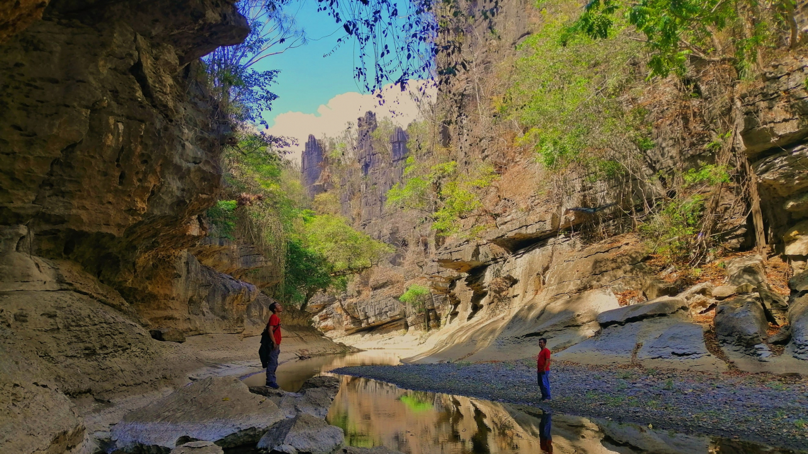
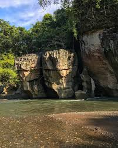
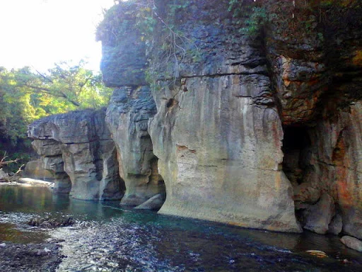
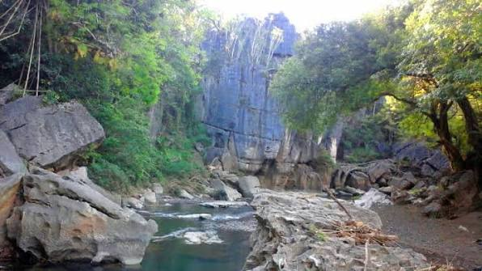

Batu Mallopie merupakan salah satu titik wisata alam di Kelurahan Lompo Riaja. Namanya berasal dari bahasa lokal, "Mallopie", yang berarti perahu — disebut demikian karena terdapat bongkahan batu besar dengan bentuk menyerupai perahu di lokasi ini.
Di sekitar batu tersebut terdapat dinding-dinding tebing batu yang berdiri kokoh, diselimuti tumbuhan menjalar hingga ke bibir sungai. Aliran air di sekitarnya cukup jernih, menjadikan lokasi ini nyaman untuk bersantai sambil menikmati suasana alam.
Informasi lebih detail mengenai akses jalan, fasilitas, dan jam kunjungan akan diperbarui setelah dikonfirmasi lebih lanjut oleh pihak kelurahan.


